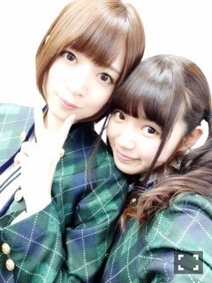
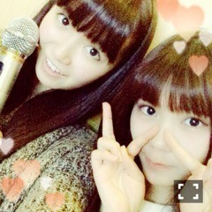
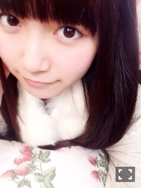
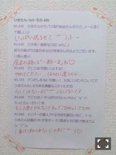

| 2015/01 16 Fri | ひめたん-OoO-その513 |


14日15日アルバムのPRをしに
橋本・高山・中元で
福岡へ行ってきました！
たくさんの媒体さんに
お邪魔してきましたよ( ˇωˇ )
ちょっとばたばたしてて
写メ少なめになってしまったのは
お許しください......。
RKB「ハイタッチ」
RKB「THE☆ヒット情報！」
RKB「今日感テレビ」
FM福岡「GOW」
LOVE FM「music×serendipity」
出演させていただきました！
サテライトスタジオでの生放送は
たくさんの方が遊びに来てくださって
寒い中ありがとうございました！
福岡のみなさんと少しの間ですが
お会いできて嬉しかったです(´｡･v･｡｀)
ラジオやテレビを
観て聴いてくれたみなさんも
ありがとうございます！
よかったら感想聞かせてください～＊
実はまだまだたくさんの
ラジオ番組やテレビロケ、雑誌に
出演させていただいたので
情報解禁をお待ちくださいませ～
福岡のみなさん
私たちをあたたかく歓迎して下さって
さらに福岡大好きになりました！
今は東京や京都まで
会いに来てくださる方がたくさんいて
本当にありがたいことです( ˇωˇ )
もっともっと福岡でも
ライブや握手会やイベント
たくさんできたらいいなあ......♡
さらにパワーアップして
帰ってくるので
待っていてくださいね。
美味しいものたくさん食べたあ
充実した1泊2日でした（ ˆoˆ ）
福岡のみなさんおじゃましました！

あとはねー
最近何してたかというとねー
あ、カラオケ行ったら
この前発売したばかりのアルバム新録曲
「僕がいる場所」あった\( ´ω` )/
よかったらみなさん歌ってくださいね
ひめたんこの曲ほんと好きなんよね
のぎ天は観ていただけましたか？
クイズ回を経て、私、
2015年はさらにのぎ天観ます！
自分の番組を自分で観るのは
ちょっと恥ずかしいんだけれども......
みなさんは何問正解しましたか？
来年もしこの企画あったら
1位獲るぞー（＾ω＾）
ゴルフサークルも頑張ります♡
ゴルフ楽しい～もっと上手になりたい～

Pびーむ
18日は横浜個別握手会！
寒いのであったかい格好で
来てくださいね。風邪気をつけてね～
新年一発目の握手会
たくさんの人に挨拶するのを
楽しみに待ってます(´｡･v･｡｀)
1部に来てくれるひとは引き継ぎ
お寝坊禁止で♡♡
19日はグラビアザテレビジョン発売！
あすかりんとのペアグラビアです
仲良し(但しビジネス)な雰囲気が
伝わるような感じになってると思います
よろしくお願いします❁


ミディアム風。なーんちゃって

 ひめたんのアルバムに入らなかった
ひめたんのアルバムに入らなかった
曲の中のお勧めは何ですか?
「やさしさなら間に合ってる」！
ひめたんは小倉唯ちゃんしってますか？
大好きです♡♡
今やってる中で
一番好きなアニメってなにー？？
「弱虫ペダル」
「デス・パレード」
「暗殺教室」
「幸腹グラフィティ」を今は観てます
「デュラララ」も録画してる！
1番は決めかねますねぇ
お話の展開が楽しみです(﹡ˆoˆ﹡)
みんね何観てるー？
ひめたんは、
寝起きは良い方ですか？
めーちゃめちゃ良いですよ！
目覚ましより早く起きることなんて
ザラにあります
ホテルで私と相部屋になったら
絶対に遅刻させません♡
ひめたんが今年達成したい
偉業は何ですか?
偉業(笑)ハードル上げないで下さい(笑)
あすかりんとのおとまり！
質問は何個までOKなの～？？？(笑)
何個でもどうぞ(＊^ω^＊)
ひめたんはあと2年だけど
着たい振袖の色とかありますか？
ぴんく♡
何か福岡らしいもの食べたかな？
水炊き、お寿司、わっぱのお弁当、
明太子も食べました\( ˆoˆ )/
テーブルにオムライス お好み焼き お菓子があります!!
この3つの内1つしか食べられないと言われてしまいます!!
貴方なら何を選び食べますか?
迷わずお菓子∠( 'ω')／
ひめたんの日記の
コメント欄下２ケタに46を踏んだ方へ
手書きでコメ返するコーナー
＼ ひめたん46 ／


いつもたくさんのコメント
ありがとうございます
ラジオはradicoプレミアムで
放送圏にお住まいでない方も
聴いてくださったみたいで( ˇωˇ )
メールのお返事も
コメントでしてくれてありがとうね
ちゃんとみてるよ～
そうそう、会社に届いたプレゼント
受け取りましたのでご報告。
ありがとう！大切にします♡
なんか今日
めっちゃ改まった日記やなあ～
眠いにゃーん。
17日18日はセンター試験ですね
応援しています∠( 'ω')／
晴れますように。
(＊´・ω・＊)
コメント(974)
2015/01/16 23:54